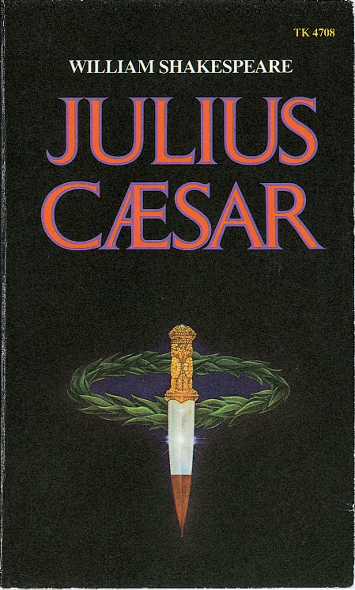

February 44 BC. Julius Caesar has just reentered Rome in triumph after a victory in Spain over the sons of his old enemy, Pompey the Great. A spontaneous celebration has interrupted and been broken up by Flavius and Marullus, two political enemies of Caesar. It soon becomes apparent from their words that powerful and secret forces are working against Caesar. Caesar appears, attended by a train of friends and supporters, and is warned by a soothsayer to "beware the ides of March," but he ignores the warning and leaves for the games and races marking the celebration of the feast of Lupercal. After Caesar's departure, only two men remain behind — Marcus Brutus, a close personal friend of Caesar, and Cassius, a long time political foe of Caesar's. Both men are of aristocratic origin and see the end of their ancient privilege in Caesar's political reforms and conquests. Envious of Caesar's power and prestige, Cassius cleverly probes to discover where Brutus' deepest sympathies lie. As a man of highest personal integrity, Brutus opposes Caesar on principle, despite his friendship with him. Cassius cautiously inquires about Brutus' feelings if a conspiracy were to unseat Caesar; he finds Brutus not altogether against the notion; that is, Brutus shares "some aim" with Cassius but does not wish "to be any further moved." The two men part, promising to meet again for further discussions.
In the next scene, it is revealed that the conspiracy Cassius spoke of in veiled terms is already a reality. He has gathered together a group of disgruntled and discredited aristocrats who are only too willing to assassinate Caesar. Partly to gain the support of the respectable element of Roman society, Cassius persuades Brutus to head the conspiracy, and Brutus agrees to do so. Shortly afterward, plans are made at a secret meeting in Brutus' orchard. The date is set: It will be on the day known as the ides of March, the fifteenth day of the month. Caesar is to be murdered in the Senate chambers by the concealed daggers and swords of the assembled conspirators. After the meeting is ended, Brutus' wife, Portia, suspecting something and fearing for her husband's safety, questions him. Touched by her love and devotion, Brutus promises to reveal his secret to her later.


The next scene takes place in Caesar's house. The time is the early morning; the date, the fateful ides of March. The preceding night has been a strange one — wild, stormy, and full of strange and unexplainable sights and happenings throughout the city of Rome. Caesar's wife, Calphurnia, terrified by horrible nightmares, persuades Caesar not to go to the Capitol, convinced that her dreams are portents of disaster. By prearrangement, Brutus and the other conspirators arrive to accompany Caesar, hoping to fend off any possible warnings until they have him totally in their power at the Senate. Unaware that he is surrounded by assassins and shrugging off Calphurnia's exhortations, Caesar goes with them. Despite the conspirators' best efforts, a warning is pressed into Caesar's hand on the very steps of the Capitol, but he refuses to read it. Wasting no further time, the conspirators move into action. Purposely asking Caesar for a favor they know he will refuse, they move closer, as if begging a favor, and then, reaching for their hidden weapons, they kill him before the shocked eyes of the senators and spectators.
Hearing of Caesar's murder, Mark Antony, Caesar's closest friend, begs permission to speak at Caesar's funeral. Brutus grants this permission over the objections of Cassius and delivers his own speech first, confident that his words will convince the populace of the necessity for Caesar's death. After Brutus leaves, Antony begins to speak. The crowd has been swayed by Brutus' words, and it is an unsympathetic crowd that Antony addresses. Using every oratorical device known, however, Antony turns the audience into a howling mob, screaming for the blood of Caesar's murderers. Alarmed by the furor caused by Antony's speech, the conspirators and their supporters are forced to flee from Rome and finally, from Italy. At this point, Antony, together with Caesar's young grandnephew and adopted son, Octavius, and a wealthy banker, Lepidus, gathers an army to pursue and destroy Caesar's killers. These three men, known as triumvirs, have formed a group called the Second Triumvirate to pursue the common goal of gaining control of the Roman Empire.


Months pass, during which the conspirators and their armies are pursued relentlessly into the far reaches of Asia Minor. When finally they decide to stop at the town of Sardis, Cassius and Brutus quarrel bitterly over finances. Their differences are resolved, however, and plans are made to meet the forces of Antony, Octavius, and Lepidus in one final battle. Against his own better judgment, Cassius allows Brutus to overrule him: Instead of holding to their well-prepared defensive positions, Brutus orders an attack on Antony's camp on the plains of Philippi. Just before the battle, Brutus is visited by the ghost of Caesar. "I shall see thee at Philippi," the spirit warns him, but Brutus' courage is unshaken and he goes on. The battle rages hotly. At first, the conspirators appear to have the advantage, but in the confusion, Cassius is mistakenly convinced that all is lost, and he kills himself. Leaderless, his forces are quickly defeated, and Brutus finds himself fighting a hopeless battle. Unable to face the prospect of humiliation and shame as a captive (who would be chained to the wheels of Antony's chariot and dragged through the streets of Rome), he too takes his own life. As the play ends, Antony delivers a eulogy over Brutus' body, calling him "the noblest Roman of them all." Caesar's murder has been avenged, order has been restored, and, most important, the Roman Empire has been preserved.
William Shakespeare was an English poet, playwright, and actor. He was born on 26 April 1564 in Stratford-upon-Avon. His father was a successful local businessman and his mother was the daughter of a landowner. Shakespeare is widely regarded as the greatest writer in the English language and the world's pre-eminent dramatist. He is often called England's national poet and nicknamed the Bard of Avon. He wrote about 38 plays, 154 sonnets, two long narrative poems, and a few other verses, of which the authorship of some is uncertain. His plays have been translated into every major living language and are performed more often than those of any other playwright. Shakespeare married Anne Hathaway at the age of 18. She was eight years older than him. They had three children: Susanna, and twins Hamnet and Judith. After his marriage information about his life became very rare. But he is thought to have spent most of his time in London writing and performing in his plays. Between 1585 and 1592, he began a successful career in London as an actor, writer, and part-owner of a playing company called the Lord Chamberlain's Men, later known as the King's Men.